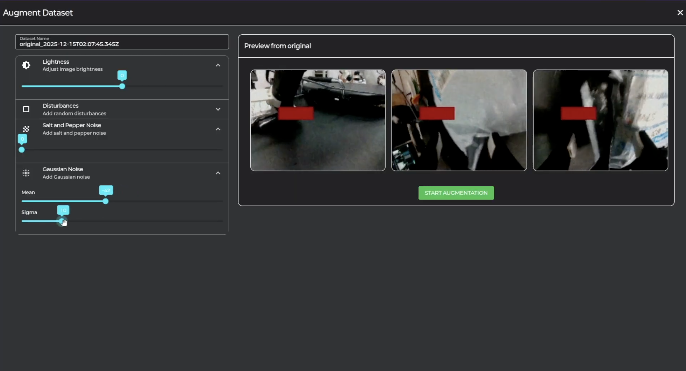
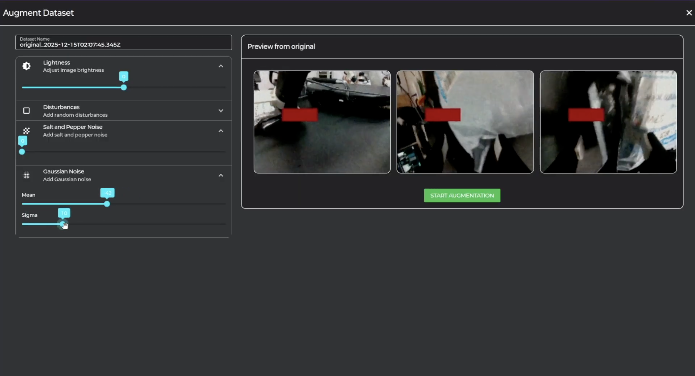

10. Data Augmentation
다양한 환경에 강건하게 학습을 시키기 위해, 수집한 데이터를 조작하여 증강합니다.

1. Workspace 탭 -> Data 탭에서 데이터 폴더 우클릭 후 Augment Dataset 클릭

 

2-1. Lightness 증강: 이미지의 밝기를 단순히 조절해줌
2-2. Disturbances 증강: 이미지에 지정한 색상의 사각형 추가
2-3. Salt and Pepper 증강: 이미지에 랜덤하게 흰 픽셀과 검은 픽셀 추가
2-4. Gausian Noise 증강: 이미지에 가우시안 노이즈 추가
데이터 증강